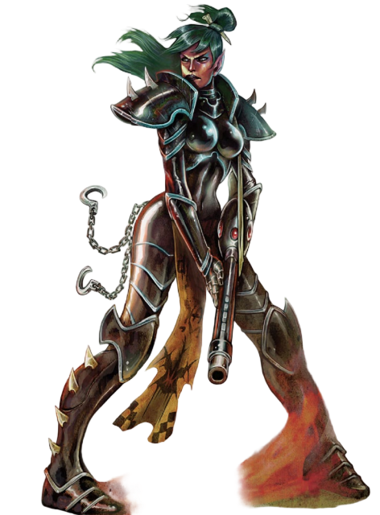

“这些虫豸靠自身之力一事无成，只配在泥淖中挣扎，连最微不足道的胜利都无法企及。但他们手握的财富与权力，足以勾起我主人们的兴趣——单凭这点，就值得以我的利刃完成他们的目的。”
——安希尔·凯拉斯，影棘阴谋团
影棘阴谋团是已知向其他种族的富人与权贵出售暗杀劫掠服务的众多阴谋团体之一。他们愿意为了原材料、奴隶或是任何更玄奥的“报酬”展开劫掠与杀戮——他们的服务冷酷无情，行事始终裹挟着狡诈与隐秘；行动迅捷无比，除屠杀痕迹外几乎不会留下任何行踪。他们承接的任务规模千差万别：从特定时间地点的单次劫掠，到大规模的恐怖流血战役，乃至派出小队战士提供长期协助。
有时，阴谋团会借出单个特工协助客户行动。这些独行战士是同侪中的致命好手——尽管他们厌恶和低等生物混杂，却愿意为了完成任务暂时放下这份憎恶。即便如此，仍有不少特工不屑于屈尊用客户的低等语言交流，更倾向于使用精密的翻译装置，将自身复杂粗粝的黑话转换为客户粗鄙的母语。

所有灵族的自然寿命都长达数个百年。尽管大多数黑暗灵族的生命都会被敌人或对手的刀锋、弹丸或是毒液骤然终结，但强者与狡诈者却能存续数千年，甚至可以借助血伶人的黑暗秘术，从致命创伤中逃脱。幸存下来并攀升至如此高度的黑暗灵族，是超脱于岁月的恐怖存在：他们的速度快过人类的思维，在无数受害者之痛苦的驱动下，足以完成令人骇然的壮举。他们能在致命高射速弹幕转瞬即逝的间隙中舞动穿梭，用近战武器或邪恶的异种枪械极速撕裂敌人，自身的力量与可怖威仪，更会随着每一次不可言说的暴力行径不断增长。
这黑暗的遗产如此强大，即便是黑暗灵族中的半生子普通突击部队，也能分得这份力量的一部分，将其用在自身无止境的攀升之路上，向着伟大领主与恐惧主宰的行列不断前进。
初始技能、天赋、特性与装备：
初始技能：杂技（Ag）、警觉（Per）、化学使用（Int）、通用学识（战争）（Int）、闪避（Ag）、无声移动（Ag）、听说语言（灵族）（Int）、听说语言（黑暗灵族）（Int）
初始天赋：堕落（Decadence）、扰人噪音（Disturbing Voice）、困难目标、阴谋团武器训练、近战武器训练（通用）、抵抗（毒素）
初始特性：敏锐感官、非帝国出身、优雅无比、痛苦即力量、勿与异星言、灵魂之敌
初始装备：极品工艺毒晶手枪或良好工艺毒晶步枪或普通工艺碎片卡宾枪、极品工艺单分子剑或普通工艺动力剑、阴谋团护甲、通讯微珠、翻译单元、可怖战利品或杀戮记录器、任意一种毒素2剂或任意一种战斗药物3剂
| 属性 | Simple | Intermediate | Trained | Expert |
|---|---|---|---|---|
| 武器技能WS | 100 | 250 | 500 | 750 |
| 射击技能BS | 100 | 250 | 500 | 750 |
| 力量S | 250 | 500 | 750 | 1000 |
| 坚韧T | 500 | 750 | 1000 | 2500 |
| 敏捷Ag | 100 | 250 | 500 | 750 |
| 智力Int | 250 | 500 | 750 | 1000 |
| 感知Per | 250 | 500 | 750 | 1000 |
| 意志力WP | 500 | 750 | 1000 | 2500 |
| 交际Fel | 500 | 750 | 1000 | 2500 |
| Rank 1 | |||
| 提升 | 花费 | 类型 | 前置 |
| 狂饮 | 100 | 技能 | |
| 隐蔽 | 200 | 技能 | |
| 欺诈 | 200 | 技能 | |
| 禁忌学识 (海盗) | 200 | 技能 | |
| 航行 (个人) | 200 | 技能 | |
| 听说语言 (高哥特语) | 200 | 技能 | |
| 听说语言 (低哥特语) | 200 | 技能 | |
| 双巧手 | 200 | 天赋 | Ag 30 |
| 快速拔枪 | 200 | 天赋 | |
| 抵抗(寒冷) | 200 | 天赋 | |
| 强韧体魄 | 200 | 天赋 | |
| 击倒 | 200 | 天赋 | |
| 航行 (个人) +10 | 300 | 技能 | 航行 (个人) |
| 技术应用 | 300 | 技能 | |
| 真生子 | 500 | 天赋 | 黑暗灵族, 仅限角色创建 |
| Rank 2 | |||
| 提升 | 花费 | 类型 | 前置 |
| 警觉 +10 | 100 | 技能 | 警觉 |
| 攀爬 | 100 | 技能 | |
| 贸易 (Chymist) | 100 | 技能 | |
| 贸易 (Voidfarer) | 100 | 技能 | |
| 通用学识 (黑暗灵族) +10 | 200 | 技能 | 通用学识 (黑暗灵族) |
| 欺诈 +10 | 200 | 技能 | 欺诈 |
| 指挥 | 200 | 技能 | |
| 驾驶 (悬浮器) | 200 | 技能 | |
| Interrogation | 200 | 技能 | |
| 恐吓 +10 | 200 | 技能 | 恐吓 |
| Literacy | 200 | 技能 | |
| 死眼射击 | 200 | 天赋 | BS 30 |
| Leap Up | 200 | 天赋 | Ag 30 |
| 钢铁神经 | 200 | 天赋 | |
| 快速反应 | 200 | 天赋 | Ag 40 |
| 抵抗(寒冷) | 200 | 天赋 | |
| Sure Strike | 200 | 天赋 | WS 30 |
| 异种武器训练 (任意黑暗灵族) | 300 | 天赋 | |
| 战斗大师 | 500 | 天赋 | WS 30 |
| 困难目标 | 500 | 天赋 | Ag 40 |
| Rank 3 | |||
| 提升 | 花费 | 类型 | 前置 |
| 杂技 +10 | 200 | 技能 | 杂技 |
| 警觉 +20 | 200 | 技能 | 警觉 +10 |
| 化学使用 +10 | 200 | 技能 | 化学使用 |
| 闪避 +10 | 200 | 技能 | 闪避 |
| 禁忌学识 (海盗) +10 | 200 | 技能 | 禁忌学识 (海盗) |
| 禁忌学识 (异形) | 200 | 技能 | |
| 恐吓 +20 | 200 | 技能 | 恐吓 +10 |
| 导航 (地表) | 200 | 技能 | |
| 学术知识(Beasts) | 200 | 技能 | |
| 学术知识(化学) | 200 | 技能 | |
| 无声移动 +10 | 200 | 技能 | 无声移动 |
| 快速装填 | 200 | 天赋 | |
| 强韧体魄 | 200 | 天赋 | |
| 双武器战斗(射击) | 200 | 天赋 | |
| 医疗 | 300 | 技能 | |
| 异种武器训练 (任意黑暗灵族) | 300 | 天赋 | |
| 仇恨 (方舟灵族) | 300 | 天赋 | |
| 腰射 | 500 | 天赋 | BS 40, Ag 40 |
| Mighty Shot | 500 | 天赋 | BS 40 |
| 手术精准 | 500 | 天赋 | Int 40, 医疗 |
| 折磨者之怒 | 500 | 天赋 | 痛苦即力量 |
| Rank 4 | |||
| 提升 | 花费 | 类型 | 前置 |
| 狂饮 +10 | 100 | 技能 | 狂饮 |
| 通用学识 (战争) +10 | 200 | 技能 | 通用学识 (战争) |
| 通用学识 (科洛努斯扩区) | 200 | 技能 | |
| 通用学识 (帝国) | 200 | 技能 | |
| 调查 | 200 | 技能 | |
| 欺诈 +20 | 200 | 技能 | 欺诈 +10 |
| 驾驶 (悬浮器) +10 | 200 | 技能 | 驾驶 (悬浮器) |
| 导航 (星际) | 200 | 技能 | |
| 航行 (飞行器) | 200 | 技能 | |
| 航行 (Spacecraft) | 200 | 技能 | |
| 缴械 | 200 | 天赋 | Ag 30 |
| 怜悯弱者 | 200 | 天赋 | S 35, WP 35 |
| 抵抗(灵能技巧) | 200 | 天赋 | |
| 双武器战斗(近) | 200 | 天赋 | |
| 魅力 | 300 | 技能 | |
| 禁忌学识 (网道) | 300 | 技能 | |
| 异种武器训练 (任意黑暗灵族) | 300 | 天赋 | |
| 强韧体魄 | 300 | 天赋 | |
| Bloodtracer | 500 | 天赋 | |
| Crack Shot | 500 | 天赋 | BS 50 |
| 闪电反射 | 500 | 天赋 | |
| 折磨者之意志 | 500 | 天赋 | 痛苦即力量 |
| 痛苦虹吸 | 500 | 天赋 | 痛苦即力量, 腐化 10+ |
| Rank 5 | |||
| 提升 | 花费 | 类型 | 前置 |
| 攀爬 +10 | 100 | 技能 | 攀爬 |
| 贸易 (Chymist) +10 | 100 | 技能 | 贸易 (Chymist) |
| 贸易 (Voidfarer) +10 | 100 | 技能 | 贸易 (Voidfarer) |
| 指挥 +10 | 200 | 技能 | 指挥 |
| 通用学识 (黑暗灵族) +20 | 200 | 技能 | 通用学识 (黑暗灵族) +10 |
| 隐蔽 +10 | 200 | 技能 | 隐蔽 |
| Literacy +10 | 200 | 技能 | Literacy |
| 禁忌学识 (网道) +10 | 300 | 技能 | 禁忌学识 (网道) |
| Interrogate +10 | 300 | 技能 | Interrogate |
| 医疗 +10 | 300 | 技能 | 医疗 |
| 导航 (网道) | 300 | 技能 | |
| 航行 (个人) +20 | 300 | 技能 | 航行 (个人) +10 |
| 残忍 | 300 | 天赋 | 怜悯弱者, 武器技能 40 |
| 强韧体魄 | 300 | 天赋 | |
| Assassin Strike | 500 | 天赋 | Ag 40, 杂技 |
| 双重射击 | 500 | 天赋 | Ag 40, 双武器战斗 (射击) |
| 异种武器训练 (任意黑暗灵族) | 500 | 天赋 | |
| Marksman | 500 | 天赋 | BS 35 |
| 灵巧侧步 | 500 | 天赋 | Ag 40, 闪避 |
| 迅捷打击 | 500 | 天赋 | |
| 折磨者之力 | 500 | 天赋 | 痛苦即力量 |
| 徒手战士 | 500 | 天赋 | WS 35, Ag 35 |
| Rank 6 | |||
| 提升 | 花费 | 类型 | 前置 |
| 通用学识 (科洛努斯扩区) +10 | 200 | 技能 | 通用学识 (科洛努斯扩区) |
| 通用学识 (帝国) +10 | 200 | 技能 | 通用学识 (帝国) |
| 禁忌学识 (海盗) +20 | 200 | 技能 | 禁忌学识 (海盗) +10 |
| 禁忌学识 (灵能者) | 200 | 技能 | |
| 禁忌学识 (亚空间) | 200 | 技能 | |
| 禁忌学识 (异形) +10 | 200 | 技能 | 禁忌学识 (异形) |
| 调查 +10 | 200 | 技能 | 调查 |
| 导航 (地表) +10 | 200 | 技能 | 导航 (地表) |
| 航行 (飞行器) +10 | 200 | 技能 | 航行 (飞行器) |
| 学术知识(Beasts) +10 | 200 | 技能 | 学术知识(Beasts) |
| 学术知识(化学) +10 | 200 | 技能 | 学术知识(化学) |
| 技术应用 +10 | 200 | 技能 | 技术应用 |
| 魅力 +10 | 300 | 技能 | 魅力 |
| Interrogate +20 | 300 | 技能 | Interrogate +10 |
| 医疗 +20 | 300 | 技能 | 医疗 +10 |
| 剑术大师 | 300 | 天赋 | 武器技能 30, 近战武器训练 |
| 遥远苦痛 | 500 | 天赋 | 死眼射击, Per 45, 痛苦即力量 |
| 反击 | 500 | 天赋 | WS 40 |
| Crushing Blow | 500 | 天赋 | S 40 |
| 异种武器训练 (任意黑暗灵族) | 500 | 天赋 | |
| 愤怒袭击 | 500 | 天赋 | WS 35 |
| 独立目标 | 500 | 天赋 | BS 40 |
| 折磨者之威仪 | 500 | 天赋 | 痛苦即力量 |
| Rank 7 | |||
| 提升 | 花费 | 类型 | 前置 |
| 狂饮 +20 | 100 | 技能 | 狂饮 +10 |
| 攀爬 +20 | 100 | 技能 | 攀爬 +10 |
| 杂技 +20 | 200 | 技能 | 杂技 +10 |
| 指挥 +20 | 200 | 技能 | 指挥 +10 |
| 通用学识 (战争) +20 | 200 | 技能 | 通用学识 (战争) +10 |
| 闪避 +20 | 200 | 技能 | 闪避 +10 |
| 驾驶 (悬浮器) +20 | 200 | 技能 | 驾驶 (悬浮器) +10 |
| Literacy +20 | 200 | 技能 | Literacy +10 |
| 导航 (地表) +20 | 200 | 技能 | 导航 (地表) +10 |
| 航行 (Spacecraft) +10 | 200 | 技能 | 航行 (Spacecraft) |
| 无声移动 +20 | 200 | 技能 | 无声移动 +10 |
| 隐蔽 +20 | 300 | 技能 | 隐蔽 +10 |
| 导航 (网道) +10 | 300 | 技能 | 导航 (网道) |
| 灵能感官 | 300 | 技能 | |
| 致残打击 | 500 | 天赋 | WS 50 |
| 双重打击 | 500 | 天赋 | Ag 40, 双武器战斗(近战) |
| 异种武器训练 (Any 黑暗灵族) | 500 | 天赋 | |
| Gunslinger | 500 | 天赋 | BS 40, 双武器战斗(射击) |
| Strong Minded | 500 | 天赋 | WP 30, 抵抗(灵能技巧) |
| 折磨者之活力 | 1000 | 天赋 | 痛苦即力量 |
| Rank 8 | |||
| 提升 | 花费 | 类型 | 前置 |
| 贸易 (Chymist) +20 | 100 | 技能 | 贸易 (Chymist) +10 |
| 贸易 (Voidfarer) +20 | 100 | 技能 | 贸易 (Voidfarer) +10 |
| 通用学识 (帝国) +20 | 200 | 技能 | 通用学识 (帝国) +10 |
| 通用学识 (科洛努斯扩区) +20 | 200 | 技能 | 通用学识 (科洛努斯扩区) +10 |
| 禁忌学识 (灵能者) +10 | 200 | 技能 | 禁忌学识 (灵能者) |
| 禁忌学识 (亚空间) +10 | 200 | 技能 | 禁忌学识 (亚空间) |
| 航行 (飞行器) +20 | 200 | 技能 | 航行 (飞行器) +10 |
| 航行 (Spacecraft) +20 | 200 | 技能 | 航行 (Spacecraft) +10 |
| 天赋异禀(杂技) | 200 | 技能 | |
| 强韧体魄 | 200 | 天赋 | |
| 魅力 +20 | 300 | 技能 | 魅力 +10 |
| 调查 +20 | 300 | 技能 | 调查 +10 |
| 学术知识(化学) +20 | 300 | 技能 | 学术知识(化学) +10 |
| 沙伊梅什门徒 | 500 | 天赋 | 化学使用 +20, 学术知识(化学) +20 |
| 异种武器训练 (任意黑暗灵族) | 500 | 天赋 | |
| Hotshot Pilot | 500 | 天赋 | 航行 技能, Ag 40 |
| 徒手大师 | 500 | 天赋 | WS 45, Ag 40, 徒手战士 |
| 铜墙铁壁 | 500 | 天赋 | Ag 35 |
| 闪电打击 | 1000 | 天赋 | 迅捷打击 |
| 折磨者之至尊 | 1000 | 天赋 | 痛苦即力量, 折磨者之活力 |
| 超自然敏捷 (x3) | 1000 | 特质 | WS 45, Ag 40, 徒手战士 |